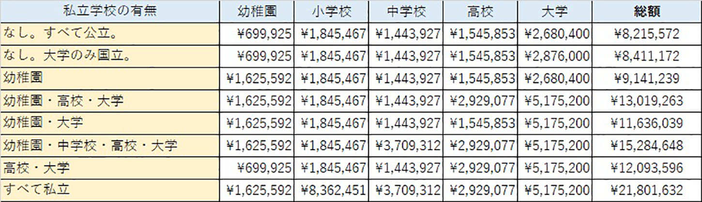
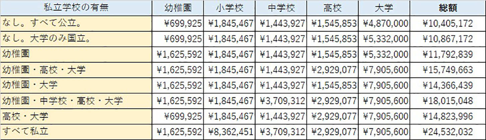
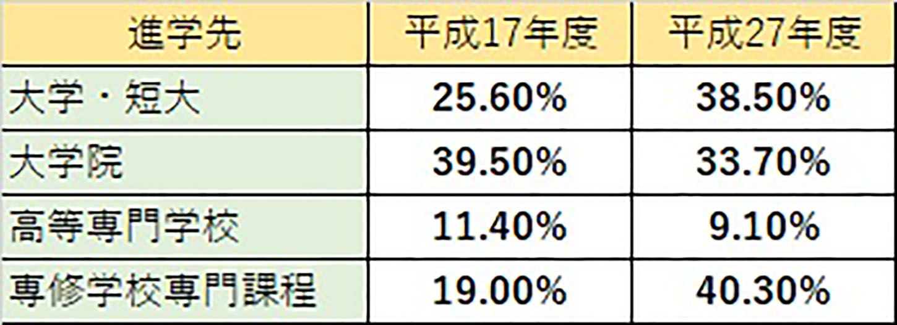

| 保険と年金に頼るな！ 〜誰でもできる安全な不動産投資法〜 | |
| 宮下大和 | |
| Hitotsuku Publication (2018) | |
宮下大和
あなたは、不動産投資と聞くと、何をイメージしますか？
「大金持ちだけに許された投資法」
「リスクが大きい危ない投資」
こんなイメージを抱く人がほとんどだと思います。確かに不動産投資は、入り口を間違えると人生をどん底に突き落としかねない大失敗を招きます。
しかし、正しい方法で優れた物件を購入すれば、不動産投資はどんな事業や投資よりもリスクが低く、将来への不安を拭い去ることが出来る「夢の投資法」です。
生命保険のように支払った保険料が無駄になることはありませんし、株のように数日で資産が半減することもありません。
ただし、そのためには確実に収益を上げてくれる「中古のお宝物件」が必要不可欠です。
「そんなはずはない、不動産で損をした人を沢山知ってるよ」
「土地転がしで儲けるなんて数十年前の幻だよ」
ここまで、話を聞いただけではそう思うのも無理はありません。そこで、不動産投資が安全な理由、不動産投資のリスクを回避する方法、そして、だれでも夢のお宝物件と出会うことが出来る方法を、順を追って説明していきたいと思います。
この本を最後まで読めば、「稼いだお金が生活費に消えていくだけの人生」や「将来への不安を抱えたままの不安定な暮らし」に、別れを告げることができるはずです。
不動産事業を「投資」と考える人が多いですが、実は不動産投資ほど「保険」の役割を果たしてくれるものはありません。生命保険よりも、学資保険よりも、個人年金よりも確実に変わらぬ収入をもたらしてくれます。
この章では、不動産投資が人生の曲がり角で発揮するパワーについて詳しくお話します。まずは、不動産投資に対する固定観念を覆して、「人生に対する保険」としての役割を頭に叩き込んでください。
「子供にはお金がかかる」
これは、だれでも知っていることですが、具体的に子供が就職するまでにいくら必要になるかご存知でしょうか。平成26
年に文部科学省が発表した子供の学費の総額を見てみましょう。
・自宅から大学に通う場合(図１)

・自宅外から大学に通う場合(図２)

全て公立で自宅から大学に通った場合は、約８２１万円、幼稚園から大学卒業まですべて私立に通った場合は、総額最大で２４００万円以上必要です。そのうち、大学進学にかかる費用は、私立大学に自宅外から通ったら８００万円弱。残りの１６００万円はボディーブローのように、毎年じわじわと支払わなければならないのです。
多くの家庭は「大学入学までにまとまったお金を用意しないと」と考え、必死に学資保険などで貯金をします。
ところが、先ほど見たように、お金がかかるのは大学だけではなく、幼稚園、小学校、などすべての段階なのです。小学校や中学校に入学すれば制服や学用品が必要ですし、部活動の活動資金や修学旅行の積み立て、塾や通信教育の費用も必要です。
これらの出費を賄いながら大学入学に向けて、十分な金額を積み立てることができている家庭はそれほど多くありません。多くの家庭が加入している学資保険も、満期で１００万円から２００万円にしかなりません。その金額では４年間の学費や下宿代どころか、１年分も怪しいものです。
ですから、奨学金を借りて子供自身が返済する家庭が急増しています。日本学生支援機構の発表によると、平成17
年から平成27
年の間に、奨学金を借りる学生の割合がおよそ１．５倍になりました。
・日本学生支援機構の奨学金を借りた学生の割合(図３)

大学生活を、経済的不安を抱えることなく送るために奨学金を借りるのは、決して悪い選択ではありませんが、子供の将来に莫大な借金を残すことになります。一番多くの人が借りている日本学生支援機構の奨学金の残高平均は「約３１２万円」です。大学卒業と同時に返済をスタートしても、最長で42
歳にならなければ完済できません。
返済期間中に、一度でも返済が滞れば信用情報機関に返済遅延履歴が登録されます。将来、お子さんが車や家をローンで購入するとき、奨学金のせいでローンの審査に通らないという事態も起こりえます。
我が子にこんな借金を背負わせてもよいのでしょうか。ほとんどの親御さんは、「できれば私たちが全額出してあげたい」と思いますよね。
ところが、冒頭でお話したように、子供にお金がかかるのは大学だけではありません。幼稚園や小学校、中学校高校と、出費は増え続けます。
そんな状態で十分なお金を貯金するのは、かなり難しいのが現実です。住宅ローンや生活費、学費を支払いながら将来の学費を貯めることが出来るのは、ごく一部の限られた富裕層です。中にはご自身の奨学金を返済している最中の親御さんもいるはずです。
では、私たち庶民は「親にお金がないから」と、子供に教育資金を肩代わりさせる負のスパイラルを続けてもよいのでしょうか？ 答えは「ノー！」です。
なぜなら、工夫次第で今の生活水準を落とすことなく、むしろ上げながら十分な学費を貯めることが出来る方法があるからです。それが「不動産投資」です。しかも、全額銀行からの融資を受けてスタートする不動産投資です。
具体的にはアパートなどの「継続的な家賃収入」が見込める物件を購入することです。銀行からお金を借りると聞くと不安になりますが、銀行への返済は全て家賃で賄うことができます。
しっかりと収益が上がる物件を選べば、自分で一銭も出さずに、自分の月収並み、もしくはそれ以上の収入を得ることができるのです。
日々の生活を切り詰めて数万円ずつ貯金するよりも、少しリッチな暮らしを送りながら十分すぎるほどの教育資金を貯めたほうが、親にとっても子供にとっても幸せなことですよね。
だから、不動産投資を学資保険代わりにすることを、推奨しているのです。
しかし、そこで１つ疑問が浮かびます。「私が病気になったり死んでしまったら、家族の生活は？」と。次は、病気や死と不動産投資の関係についてお話していきます。
「医療保険の代わりに不動産投資」と聞くと「安心や安定とは真逆」と思うかもしれませんが、実際には医療保険よりも、不動産投資のほうがお金は減りませんし、安定を得ることができます。
病気で入院したり通院したりすると、あらかじめ決められた金額が支払われる「医療保険」は、ほとんどの人が加入しているのではないでしょうか。生命保険の特約として加入していたり、県民共済などで加入していたりと、形はそれぞれ違いますが、何らかの形で入院などに備えていると思います。
確かに医療保険は、「入院日額１万円」など定額で保険金が支払われますし、入院が長期にわたった場合は、支払った治療費や手術代よりも受け取る保険金を上回り少し「得をすること」もありますよね。
ところが、元気な時はどうでしょうか？ ほとんどの場合、健康な状態では保険金は支払われず、毎月保険料だけを支払うことになります。病気をせずに一定の期間を過ごすとボーナスが支払われるタイプの保険もありますが、支払った保険料が全額返ってくることはありません。公益財団法人生命保険文化センターが実施した「生命保険に関する全国実態調査」によると、１年間に支払う生命保険料の平均は「４１．６万円」でした。年収５００万円の家庭では年収の１割も生命保険料を支払うことになりますよね。貯金ならまだしも、ほぼ返ってくることのない「保険」に数十万円支払い続けるのは、無駄なのではないでしょうか。
例えば「月額保険料５０００円・入院したら日額１万円」という医療保険に10
年加入した場合、支払う保険料の総額は60
万円です。この保険料の元を取ろうとしたら最低でも２か月間入院しなければなりません。ところが、公益財団法人生命保険文化センターが発表した入院期間の平均日数によると「35
歳から64
歳までの入院した男女の平均入院日数は約24
日」。がんに限って言えば約15
日です。つまり、ほとんどの人が医療保険の元を取ることはできないのです。
毎月５０００円とは言え、保険会社に寄付しているようなものですよね。もちろん、その金額で「安心を買っている」のだからいいという考え方もあります。しかし、それで満足していたらいつまで経ってもお金は増えません。それどころか、数千円とは言え減り続けるのです。安心のために、大切なお金を減らすのは本末転倒。だから、本当のお金持ちは、医療保険には入らずに自分でお金をプールしておきます。しかし、それはお金持ちの話。それでは私たち庶民はどうすればいいの？ というと「お金がなくて将来が不安だからこそ」不動産投資を始めるのです。
子供の学費について説明した時にもお話しましたが、不動産投資は自己資金０円全額融資でスタートできます。そして、自分が病気になろうと元気だろうと、毎月まとまった金額が自分の手元に残ります。この金額をプールしておけば、イザと言う時の備えになりますよね。病気で入院したら、会社のお給料は有休を消化してしまえば支払われませんが、家賃収入は自分が入院してようと、寝たきりだろうと安定した収益をもたらします。しかも、自分のお金が減ることはありません。これこそ、究極の医療保険と言えますね。
家族のためにバリバリ働いている大黒柱にとって、一番の不安は「大黒柱の死」ですよね。子供が小さい場合や奥様に収入がない場合は、よりいっそう自分が死んだ場合の家族の生活が心配になります。そのために生命保険がありますが、支払われた保険金を崩しながら生活することは、残された家族にとっては大きなストレスです。男性の生命保険の平均保障額は２０４３万円。２０００万円の保険金を受け取っても、毎年３００万円使えばたった７年足らずで底をついてしまいます。かといって遺族年金だけでは子供たちの学費を含め十分な生活を送ることはできません。
ところが、アパートなどの収益物件を全額ローンで購入していた場合、まずは家賃収入が残された家族の生活の基盤となります。アパートは所有者が誰であろうと変わらず家賃収益を上げ続けるからです。しかも、「団体信用生命保険付き不動産ローン」という「ローンの契約者が死亡した場合は、残債の支払いを免除する」タイプのローンを組んでいた場合、ローンを契約した本人が死亡した場合は、銀行への返済が全額免除されます。
つまり、死亡した時点で「家賃収入のほぼ全額」が残された家族の収入になるのです。アパート経営を辞めたければ、その物件を売ることで、生命保険を上回る多額の一時金を受け取ることができます。
これほど、無駄がない上に手厚い生命保険はありませんよね。しかも、家賃収入は「死ななくても」受け取れるのです。生命保険は契約期間内に死亡しなければほとんど丸損ですが、家賃収入は大家さんがどんな状態であろうと、変わらずお金を届けてくれます。自分が生きている間に、「自分がいなくなった時の安定した家族の生活」を思い描くことができるのは、数ある投資や保険、事業の中でも不動産投資だけです。ちなみに、生命保険文化センターの調査によると、男性の生命保険の年間平均保険料は24
万円、40
年で１０００万円です。
「１０００万円で安心を買う」「支払い０で毎月数十万円を受け取る」、あなたならどちらを選びますか？
現在のお年寄りが受け取っている年金の平均額をご存知でしょうか？ 厚生年金に加入していた男性は約18
万円、女性は９万円。国民年金のみ加入していた場合は約６万円です。そして、老後に夫婦で生活するために必要なのは約25
万円(公益財団法人生命保険文化センター調べ)。この中には家賃や住宅ローンは含まれていませんので、賃貸暮らしやローンがある人は、ここにそれらが上乗せされます。
夫婦で厚生年金に加入していた場合は、なんとかギリギリ生活することができますが、国民年金だけ加入していた場合は、確実に生活に行き詰まります。しかも、私たち世代が年金を受け取る時には、年金額はさらに低くなっています。それに備えて個人年金に加入している人もいますが、30
代の加入率は10
％
強です。そして受け取れる年金の年金は年額で20
万円から50
万円が大半。とある生命保険会社の個人年金をシミュレーションしたところ、30
歳で毎月２万円支払う個人年金に加入した場合、受け取れる年金は月額６３５００円でした。しかも10
年で終わってしまいます。これでは老後の「確かな備え」とは言えませんよね。
ところが、家賃収入はもっと高額で安定した収入を、延々と受け取り続けることができます。例えば、家賃８万円の部屋が６部屋あるアパートを購入した場合、単純計算で月額48
万円が手元に入りますよね。頭金０円で全額ローンで購入した場合、自分の貯金を一切崩さずに一般的な年金収入の２倍以上を受け取り続けることができるのです。先ほどご紹介した個人年金は「自分が支払った保険料とほぼ同額を受け取るだけ」でしたが、家賃収入は「自分は一切支払わないのに厚生年金の２倍以上受け取れる」のです。どちらが、お得になるのか考えなくてもわかりますね。
ここまで話を聞くと「不動産投資は完璧な人生の補償」と思えてきますが、実はリスクもありますし、失敗することもあります。知識０の素人が丸裸で飛び込んで大成功できるほど、甘い世界ではありません。次の章では、想定できるリスクと回避法を説明していきます。
不動産投資は、人生の景色を一変させる完璧な投資法ということがわかってきたと思いますが、ここでいきなり身を投じるのは危険です。不動産業界は海千山千のブローカーと呼ばれる人たちや、企業の不動産マンがばっこする恐ろしい世界です。飛んで火に入る夏の虫がごとく、甘い話に群がる素人をはめ込んでやろうと虎視眈々と狙っています。そこで、ここでは彼らの餌食になってしまい悲惨な末路を迎えた人の実話を交えながら、不動産投資のリスクと「誰でも実践できる回避法」、不動産投資のメリットをわかりやすく説明します。「不動産投資するしかない！」と鼻息を荒くしている方は、少しクールダウンしてこの章を読んでください。
私の知り合いの斎藤さん(仮名)は、不動産投資で成功を収めている同級生の体験談を聞き、「自分もやるんだ！ あいつのようになってやる」と決意して、同級生から聞きかじった知識を頼りに５０００万円の中古アパートを購入しました。必死に貯金した１０００万円を頭金に、銀行からお金を借りたのです。不動産業者は、「毎月家賃収入が50
万円ほどあるから、ローンの支払いは家賃から賄える」と説明していたので、安心していました。ところが、実際に経営を始めてみると、部屋は８室中６室が空室で、収益どころかローンの支払いにも足りません。しかも、入居者を探すための広告費や修繕費、リノベーション費用などが追加で必要になり、再びお金を借りるはめになりました。しかし、空室対策をしても修繕をしても、アパートが満室になることはありません。
結局斎藤さんは、３年も待たずにアパートを手放して、手元にはアパート購入費用と修繕費などの借金だけが残りました。もちろん、最初に支払った頭金の１０００万円も返ってきません。斎藤さんは、アパート以外に自分のマイホームのローンも抱えていたため、自己破産することができませんでした。しかし、会社のお給料だけではアパートのローンと住宅ローンが返済できないので、夜間にコンビニでアルバイトをしてかろうじて生活している状態です。彼には奥さんもお子さんもいますが、ほとんど会話する時間もない生活が続いています。
「不動産を所有して不労収入を得て、いつかは会社を早期リタイヤできるかもしれない」と夢を見ていたのに、蓋を開けたら不動産投資前の２倍働いても、手元に残るお金は半分以下。私は彼の姿を直視することができませんでした。
これは、決して珍しい話ではありません。不動産投資の成功率は、全体の10
％
と言われています。その理由は、不動産投資の５大リスクの大半を無視して物件を購入するからです。不動産投資の５大リスクとは、「ローンリスク」「空室リスク」「火事天災リスク」「修繕リスク」「金利上昇リスク」の５つ。
先ほどの斎藤さんは、このうち「ローンリスク」「空室リスク」「修繕リスク」対策を行わずに物件を購入したので、悲惨な末路をたどることになりました。斎藤さんのような悲劇の主人公になりたくなければ、次にお話する不動産投資のリスク回避法を実践してください。
それでは、早速不動産の５大リスクを回避する方法を１つずつ説明していきます。
・ローンリスクの回避法
不動産投資のローンリスクとは、「ローンが返済できなくなるリスク」です。不動産投資で十分な収入を得るためには、最低でも３０００万円程度の物件が必要になります。これを全額銀行から借りてスタートすることが、不動産投資の第一歩ですが、サラリーマンが借りるには少し金額が大きく、万が一返済できない場合は、人生設計が大きく狂ってしまいます。
しかし、不動産投資の場合、ローンを返済するのは大家さんではなく入居者さんたちです。ローン返済は全て家賃収入で賄うのが原則なので、「ほぼ空室がない状態」をキープできる物件を購入することができれば、ローンリスクは無くなります。つまり、ローンリスクを回避する方法は「空室率が低い優良物件を購入すること」なのです。ただし、素人がいきなりほぼ満室の優良物件に出会えることはほとんどありません。そんな美味しい物件はプロが真っ先に目をつけて購入します。だから、優良物件を紹介してくれる知人や仲間が必要です。彼らと出会う方法や、物件を紹介してもらう方法は後ほどご紹介します。
・空室リスクの回避法
空室リスクとは、物件に空室が出るリスクです。住んでいた入居者が引っ越した後、誰も入居しない部屋が増えると、家賃収入が減ってしまうので、ローンを支払えなくなる可能性があります。すると、先ほど登場した斎藤さんのようにローンが支払えなくなりアパートを手放して「手元に残ったのはローンだけ」という悲惨な状態になります。
この悲劇を回避できるのは、先ほどのローンリスクの回避法と重複しますが、「ほぼ満室の優良物件を購入すること」です。「リノベーション」や「広告」なども空室対策としては有効ですが、やはり物件の本来持っている「ポテンシャル」にはかないません。「だったら、現在満室のアパートを買えば良いのでは？」と考えますよね。しかし現在満室だからといって、将来にわたって満室が続くとは限りません。むしろ、前のオーナーが「今がチャンス」とばかりに売りに出している可能性もあります。
空室が多いアパートには、やはりそれなりの理由があります。しかし、外側からみていてもその理由がわからないものがほとんどです。「駅からの距離」「近隣の商業施設の充実度」「静かさ」「住人の質」などなど、資料や現場を確認する限り、「みんなが住みたいと思うに違いない」と考えられる物件でも、すぐに転居してしまい、空室率が常に高い物件が少なからずあるのです。
理由は、「コンビニが近すぎて集配車の音が気になる」だったり「階段を上り下りする音がうるさい」だったり、「登下校している小学生の声がうるさい」だったりと様々です。しかし、これは一個人が物件探しをしている時には気付けない情報です。そのエリアの不動産情報に精通したプロでなければ、「本当に稼働率が高い物件かどうか」は判断できないのです。
だから、自分で探すのではなく、不動産投資のプロの意見を仰いで「優良物件」を購入してください。そうすれば自ずと空室リスクはなくなります。
・火事天災リスクの回避法
火事、天災リスクとは、火事や地震などで所有する物件が被害に遭い、多額の修繕費用が発生したり、修理不能なまでに壊れてしまうリスクです。多額のローンが残っているのに、お金を運んできてくれる物件がダメになってしまえば、全ての計画が台無しになり、人生が「詰んで」しまう危険性があります。
しかし、不動産投資においては、火事や天災のリスクは一切心配することはありません。なぜならば、投資用物件はローンで物件を購入する際に、「火災保険」と「地震保険」に加入しているからです。
火災保険に加入していれば、万が一火災や台風などの災害に見舞われても、修理代がほぼ全額支払われます。修理できない「全損状態」になってしまったら、契約時に設定した金額を上限に、「同等の建物を新築するための費用」が支払われます。つまり、火事が起きたら同じ規模のアパートを新築することができるのです。これで火事に対するリスクはほぼなくなったと言って良いでしょう。
次に心配なのが地震です。日本は地震国と言われており、数年に１度は日本のどこかで大地震が発生しています。ところが火災と同様に「地震保険」に加入していれば、全壊状態になっても「新築を購入するための費用」が支払われる訳ではありません。実は、地震保険は「火災保険の保険金額の半額」までしか保険金が支払われないのです。火災保険の保険金額が３０００万円の場合、地震保険の上限金額は１５００万円です。いくらお金を支払うといっても、この規定は政府が決めているものなので、どうすることもできないのです。ですから、地震保険に加入する時は「地震危険補償特約」などの、地震保険に上乗せするタイプの「特約」に加入する必要があります。保険料は少し高くなりますが、この特約に加入しておけば、大地震が起きても物件の修繕費用や再建築費用を心配しなくてすみます。不動産会社や保険会社はこの「特約」について説明してくれない可能性があるので、自分から加入したいことを伝えてください。
・修繕リスクの回避法
修繕リスクとは、各部屋の改修費用だけではなく、階段や外壁、屋上の防水、などの共用部分の修繕費用に関するリスクです。どんなにデザインや強度にこだわって建てられた物件でも、定期的なメンテナンスは必要になります。新築物件を購入する場合は、しばらくメンテナンスは必要ありませんし、定期的に手を加えていれば大幅な修繕費が発生することはありません。
しかし、多くの個人不動産投資家が購入する「中古物件」となると、そういう訳にはいきません。前のオーナーがどれだけ手を入れていたかによって、これからどれほどの修繕費用が発生するかわからないのです。例えば、屋上の防水工事。屋上は定期的に防水工事を施さなければ、遅かれ早かれ雨漏りするのですが、過去10
年間全く屋上防水工事を行っていなければ、購入してすぐに数１００万円の屋上防水工事費用を支払うはめになりかねません。現金がなければローンを組むことになります。そうやって、積もり積もった修繕費用のローンの支払いは、真綿で首を絞めるようにオーナーを少しずつ苦しめ、気が付いたら、「家賃収入よりもローン返済額が高額になる」という、まさに「本末転倒」な状態に陥りかねないのです。
ではどうしたら良いのかというと、答えは簡単。「前のオーナーが念入りに手を入れていた物件」を探すだけです。そんな物件を見つければ、修繕リスクは大幅に軽減できます。
・金利上昇リスクの回避法
ローンを組むときは、０．１％
でも金利が低い金融機関から借りたいですよね。すると、ほとんどのオーナーが「変動金利」を選択することになります。変動金利を選ぶと、恐ろしいのが将来の金利上昇です。
借入額が高額になる不動産投資ローンは、金利が１％
上昇するだけで、返済総額が１００万円単位で増えることになります。ですから、金利上昇は不動産投資家にとっては死活問題です。ところが、これについてはオーナーが全く対策を取らなくても、大きな心配をすることはありません。なぜならば、金利を決定している日本自体が桁違いの借金をしているからです。
２０１７年12
月現在の、我が国の国債残高は８６５兆円。これは無利子ではなく、全て金利を支払って返済します。ですから、政府が金利を上げるということは、自分の首を締め付けるようなものなのです。つまり、政府が大借金を抱えている以上、大幅な金利上昇はあり得ないということです。金利上昇については、我々個人不動産投資家は心配することはありません。
不動産投資は、数ある投資の中でも、一番古いと言われている投資法です。現在は、仮想通貨や株取引のデイトレード、ＦＸ取引など、数多くの投資が存在します。そんな中で、なぜ今なお多くの個人や企業が「不動産投資」を続けているのか疑問に思いませんか？ 時の流れとともに投資法も多様化して、より効率よくお金を儲ける方法がたくさんあるはずなのに、数百年間変わることなく続いている不動産投資に、多くの人や企業が参入するのには、不動産投資に大きなメリットがあるのではないか、と。
例えば放送局のＴＢＳは、本業の売り上げが66
億円なのに対し、不動産収入は77
億円です。もはや、不動産投資が本業で、副業でテレビ番組を作っていると言ってもいいでしょう。不動産投資は、私たちが思っている以上に、多くの企業が当たり前のように行っている事業の一環といえます。
なぜ、個人だけでなく大企業も積極的に不動産投資を行っているのでしょうか？ その理由は「不動産投資は人を選ばないから」です。昔から、不動産投資には８つのメリットがあると言われています。それがこちらです。
・収入の安定
・資産価値の安定
・不労所得になる
・保険代わりになる
・再現性が高い
・節税になる
・自己資金ゼロでもはじめられる
・社会的信用になる
この中でも企業が投資を選ぶ理由は、「再現性が高い」からです。不動産収入の増減が「人」ではなく「物件」にかかっているから、企業は不動産投資に注力するのです。企業の売上は、社長をはじめとした優秀な人材にかかっています。業績が良かった企業が、社長交代によって低落したり、はたまた低迷していた企業が、社長の辣腕で不死鳥のように蘇る例は、枚挙にいとまがありません。それが会社経営の醍醐味ではありますが、ある程度規模が大きくなると「経営手腕」によって、売上が大きく増減することは、決して褒められることではありません。将来の売上増のための、人員増員や設備投資の目処が立ちません。巨額の融資を受けて、新しい事業を始めようにも利益が安定しなければ、返済できる保証もありません。
だから、多くの企業は不動産投資に手を伸ばします。不動産から得られる収入は、経営者の手腕や社員の質に左右されることはないからです。最悪社長がいなくても、赤ちゃんでも不動産からの収入は途絶えることなく入金されますよね。
これは、会社だけではなく私たち個人にも言えることです。株取引やＦＸ取引、仮想通貨の売買などで巨額の資産を得ている人が、数多くメディアに登場しています。そのバブリーな生活や１日で得られる利益の大きさに、目を奪われてしまいますが、95
％
の個人の年間損益はマイナスです。
しかも、現在大儲けしている人たちも、自分が取引できない状態になってしまえば、それ以上お金は増えません。株で１億円の資産を得ても、凄腕トレーダー本人が死んでしまえば、残された家族の元には１億円分の現金、もしくは、株が残るだけです。ほとんどの人は、真似してトレードしても資産は目減りしていきます。１億円を銀行に預けて取り崩して生活すれば、徐々に貯金残高は少なくなります。
しかし、これが１億円分の不動産の場合はどうでしょうか？ １億円の不動産は、オーナーが死んでも変わらずに家賃収入をはきだしつづけます。物件にもよりますが１億円のアパートの場合、年間１０００万円程度の家賃収入が見込めます。10
年間１０００万円を使い続けても、アパートは消えてなくならないので、その後の10
年間も収入があるでしょう。しかし、１億円の遺産は毎年１０００万円を使い続けたら、10
年間で底をつきます。
賢明な企業の経営者や個人資産家が、こぞって不動産を購入している理由がわかりましたね。不動産投資は、購入する物件さえ間違えなければ誰でもいつでも変わらない収入をもたらし続けてくれるのです。
不動産投資には、８のメリットとともに５つのリスクがありますが、回避法はこの章でしっかり説明しましたので、あとは投資を始めるだけです。次は年収３００万円でスタートする不動産投資のノウハウを説明しますので、最後まで読んでから不動産投資への第一歩を踏み出してください。
「不動産投資は全額融資でスタートすべき」と何度かお話していますが、ここからは具体的なノウハウを説明します。年収３００万円からスタートできますので、１つずつ順を追ってクリアしていきましょう。
「一生懸命貯めたお金があるから、それを全部使って投資用物件を購入したい」と考える人が少なくありません。日本人は「借金＝悪いこと」と考える人がほとんどだからです。私たちが借金、ローンと聞くと思い浮かべるのは何でしょうか？「自動車ローン」「住宅ローン」「キャッシング」などがほとんどだと思います。確かにこれらのローンは、みなさんが考える通り「悪い借金」です。これらは全て車や家を「買うお金がないから借りるローン」ですよね。お金を借りたら、金利をつけて返済しなければならない上に、建物や車は買った時点から価値が下がり続けます。
では投資用物件はどうでしょうか？ お金を借りて、投資用物件を購入したら、毎月一定の収入が得られる上に、物件価格も収益があることから、居住用物件ほど下落しません。家賃収入でローンの支払いが全額賄える上に、お給料以上の収入を得ることも可能です。不動産投資のために借りるお金は「良い借金」なのです。
株式投資に詳しい方ならわかると思いますが、上場企業が「銀行から融資を受けて新規事業をスタートします」と言うと、新規事業に将来性があれば株価は急上昇しますよね。ところが、「取引先への支払いができないから銀行からお金を借りました」というと株価は急落。事業においては、「将来の収入増につながる借金」はプラスの評価なのです。それは、個人の不動産投資でも一緒です。不動産投資のための借金は、私たちが日頃馴染みのある各種ローンとは一線を画した「良い借金」であることを忘れないでください。
不動産投資を全額融資でスタートすることが「悪いことではない」ということは理解できても、なぜわざわざお金を借りてスタートするのかが、わからないと思いますので説明します。不動産投資を全額融資でスタートする理由は、「今の人生に不動産投資が悪い影響を及ぼさないため」です。ローンであれば、全額家賃収入で賄えるので、自分のお金が減ることはありません。しかし、貯金を使ってしまった場合、貯金が減ってしまいますよね。貯金額が大きければ大きいほど「貯金が無くなってしまったことへの焦り」や「不安」が生まれます。お金が生んだ焦りや不安は、知らず知らずのうちに私たちの心を侵食して、生活と心のゆとりが無くなってしまいます。
しかし、全額ローンで不動産投資をスタートすれば、貯金はそのままです。貯金を使った場合も、使わなかった場合も最終的に手元に残る金額は変わりませんが、貯金が無くなったことによる「心の焦りや不安」は残ります。ですから、貯金は使わずに、お金を借りて不動産投資をスタートしてください。
先ほどお話したように、不動産投資に頭金は必要ありません。「サラリーマン」という肩書と「年収３００万円」あればだれでもスタートできます。まず、銀行はサラリーマンが大好きです。サラリーマンは、仕事をやめない限り安定した収入が見込めるので、ローン返済不能に陥る可能性が低いからです。そして、年収３００万円あればローン審査はほぼ通ります。全額自己負担で返済しなければならない住宅ローンですら、年収３００万円あれば２０００万円近く借りられるのです。
ただし、以下の場合は年収が３００万円以上あってもローン審査に通らない可能性があるので、思い当たる節がある方は、不動産投資に精通している人や銀行に相談してください。
・携帯電話の本体費用分割払いを何度も滞納したことがある
・クレジットカードの引き落としができなかったことがある
・日本学生支援機構の奨学金を延滞している
・複数のカードローンを契約している
これらの、項目にあてはまるものがなく、年収が３００万円あればローン契約は難しくありませんので、勇気を出して一歩を踏み出してください。もし、年収３００万円に満たないようなら、そんな人間の価値を正当に評価してくれない会社には見切りをつけて、転職を考えるべきです。
「不動産収入でセミリタイア生活をおくっています」
「不動産投資で年収１億円突破」
そんな不動産投資成功者をＳＮＳやテレビなどで見かけると、「やっぱり、成功者は違うな」「持っている器が違うな」「運がいいんだよ」と自分との違いを見つけて、知らず知らずのうちに「自分が同じようにできない理由」を探していませんか？ もちろん、不動産投資成功者の中には、常人にはない「カリスマ性」や「知能」を持っている人もいるでしょう。しかし、そんなものは不動産投資には必要ありません。必要なのは「一歩を踏み出す勇気」と「優良物件」だけです。
いくら経営能力が高い敏腕経営者でも「ダメ物件」を掴んでしまえば、安定した不動産収入を得ることはできません。しかし、ごくごく普通のサラリーマンでも、「優良物件」を手に入れれば、たちまち不労収入で悠々自適な生活を送ることができます。その中で発信力の高い人、見た目に華がある人がＳＮＳやメディアに露出しているだけで、決して彼らのカリスマ性などは不動産投資に必要ないのです。
「どう見てもその辺のおばちゃんが、不動産収入１０００万円越えの不動産オーナーだった」という話は掃いて捨てるほどあります。その人たちと失敗者の差は、「優良物件を買ったかどうか」だけです。勇気を出して一歩を踏み出して「優良物件」さえつかめれば、その日から成功者の仲間入りを果たせます。
不動産投資の唯一のデメリットがあるとすれば、「入居者さんの管理」や「物件の保守管理」です。入居者さんの家賃の入金状況の把握、督促、共用部分の掃除や草抜き、など大家さんがするべき仕事は沢山あります。一般的なサラリーマンは、それらの作業を仕事の合間にこなすことは簡単ではありません。
しかし、管理を「不動産管理会社」に任せることで、それらの煩雑な仕事から一気に解放されます。家賃入金に関する面倒な、連絡や事務、掃除などありとあらゆる管理を担ってくれるのです。当然管理費用を支払いますが、家賃収入のごく一部なので、大きく家賃収入に影響することもありません。
それに、管理会社に管理を丸投げするもっと大きなメリットがあります。それが「入居者さんの印象が良くなること」です。あなたは、賃貸アパートなどを契約する時に「大家さんが近くに住んでいる」とか「大家さんが頻繁に掃除をしてくれる」と聞くと「嬉しい！」というよりも「ちょっとうざいな」と思いませんか？ 特に若い世代の入居者さんは、オーナーの介入を嫌がる傾向にあります。しかし、管理が「○○株式会社」といった会社であれば入居者さんの心理的ハードルが一気に下がります。
入居者にとってもオーナーにとっても、管理会社による管理はベストな選択なのです。管理会社に委託すればオーナーは、「何もしなくても銀行にお金が振り込まれる」という状態になります。まさに「本物の不労所得」ですね。
最後は、「不労所得を手に入れるための確実な方法」を説明します。ここまで読んで、不動産投資に前向きになっても、最後の方法を読まなければ大失敗して人生が台無しになるだけなので、頑張って最後まで読んでください。
ここまで、何度も「不動産投資を成功させるために必要なのは『優良物件』」とお話してきました。個人が頭金ゼロで不動産投資を始める場合、「中古アパート１棟」を購入することが一番の近道なのですが、中古アパートの投資は大きな失敗リスクも付きまといます。そこで、「誰でもすぐにできる」優良中古アパートを探すためのノウハウを解説していきたいと思います。
不動産投資は、他の投資以上に「失敗者」が多い世界です。「融資が通らなかった」というスタートでつまづく人から、「利回りが悪い＝入居者が入りづらい物件」を掴んでしまう人、など失敗の中身は人それぞれ。しかし、失敗する理由はほぼ共通しています。それが「自己流」です。不動産投資は、一見「物件を買うだけ」なので、多くの個人投資家が本やインターネットなどで仕入れた知識を元に、「インターネットで物件を探して購入」します。専門家にアドバイスをあおぐことも、専門的な知識を得ることもせずに、裸一貫で飛び込む人がほとんどなのです。
不動産投資の世界ほど、自己流の初心者に厳しい世界はありません。まず、最初に立ちはだかるのは「物件情報の壁」。インターネットで物件探しをしている時点で「ほぼ負けている」と思ってください。ネットの不動産情報は売れ残りです。そこで、掴んだ物件を購入するために銀行に向かうと、「銀行融資の壁」が登場します。不動産投資のための融資を受ける場合、必要な書類は膨大です。
・物件関係書類(物件概要書、不動産登記簿謄本、地積測量図、公図)
・運転免許証＆
健康保険証の写し
・源泉徴収票３期分(自営業の場合は確定申告書３期分)
・保有資産一覧
・住民票、印鑑証明書、納税証明書
・直近３か月分の給与明細書
・事業計画書
役所に、税務署、勤務先の人事課、などあちこち回って書類を集めなければなりません。一番大変なのは「事業計画書」です。事業計画書は、多くの場合、売買を仲介した不動産会社などの業者が作成して持たせてくれます。しかし、ほとんどの事業計画書が「お花畑」気味。人気地域でもないのに入居率が常に１００％
だったり、家賃設定が相場より高かったり、と非現実的な数字が並べられていることが少なくないのです。ですから、「自分で相場を調べて自分で納得した現実的な数字」を提示することが大切です。そうでなければ銀行は、「ああ、この人は業者に踊らされている素人だから不動産経営は無理だろう」と判断します。さらに、銀行マンは、当該物件について色々質問してきます。やる気と本気度を確認するために、物件についてどれだけ自分の足と手を使って調べているのか確認するのです。このように個人の不動産投資家にとって、銀行の融資はかなりのハードルです。多くの人がここでつまずいて、二度と戻ってきません。
無事に融資を受けられることになったとしても、物件自体が空室率が高かったり、修繕費用ばかりがかかってしまう「粗悪物件」だった場合は、ローンの返済もままならない状態に陥ってしまいます。プロの不動産業者やプロの不動産投資家が見向きもしなかった、低収益物件を購入したのだから当然です。
個人が自己流で不動産投資をスタートすると、ほとんどの場合が「銀行融資の壁」と「粗悪物件」によって失敗します。「自己流は事故る」とよく言いますが、この言葉は不動産投資を始めるのであれば、毎日噛み締めなければなりません。常に「ここではまだまだ自分は赤ちゃんだ」と思っておかなければ、いつ足元をすくわれるかわからないのです。
不動産投資の自己流は、ほぼ確実に失敗します。銀行マンも不動産業者もみんなプロです。特に手強いのが不動産業者。不動産業者が個人投資家に紹介してくる物件のほとんどは、売れ残りの不良物件です。外見はキレイに塗装してあっても、耐震補強がなされていない古い物件だったり、建っている地盤が軟弱だったり、と何かしらの欠陥を抱えている物件も少なくありません。
「ここは駅から遠いけど、大学が近いからすぐ満室になるよ」と言われて購入したら実は大学の移転が決まっていた、という話もあります。彼らプロには、私たち個人は絶対にかないません。不動産業者は大中小ありますが、どこも縦だけではなく横のつながりが強く、そのネットワークから優良物件がこぼれ出ることはほとんどないからです。
しかし、影響力のある個人不動産投資家のコミュニティには、不動産業者から一般には知らされない優良物件情報が出回っています。なぜならば、イチ個人投資家としては立場が弱くても、「コミュニティ」という形の集団になると、不動産投資事業を専門にしている会社と同じくらいの、物件購入力があるからです。２棟アパートを所有している人が20
人集まったら、合計のアパート数は40
棟。立派な不動産投資会社並みの棟数ですよね。ですから、不動産業者は優良物件の情報を優先して流してくれるのです。
このように、個人投資家は個々で戦うのではなく「集団」になることで、プロ並みの情報力を手に入れることができます。私たち個人が情報力でプロに並ぶためには、この方法しかありません。
個人投資家が歴戦の企業投資家に肩を並べて、安定した不動産収入を得るために必要なのは、「プロ並みの情報力」です。そのために必要なのは、インターネットの情報でも不動産投資本でもなく、「プロ並みの情報ルートを持ったコミュニティ」です。これさえあれば、不動産投資に付きまとうほとんどのリスクが解消されるだけでなく、突発的なトラブルにも対応できるようになります。
コミュニティには、常に優良不動産情報が出回っていますので、知識もコネもない個人がいきなり、「プロも欲しがる優良収益物件」を手に入れることができるのです。そしてその管理のノウハウ、おすすめの管理会社、などなど多くの情報を手に入れることができます。インターネットや投資本に書かれているような薄っぺらな内容ではなく、「状況に応じて」必要なアドバイスを受けることができます。
不動産投資をゼロから始めようと思ったら、「収益物件」よりも優良なコミュニティやグループを探しましょう。私たち個人が高利回りの収益物件に出会うことができる唯一の道が、「個人投資家の仲間」を手に入れることです。コミュニティやグループと聞くと、「詐欺」や「ネズミ講」のようなマイナスイメージが付きまとうと思います。実際に、不動産投資を誘い文句にネットワークビジネスに勧誘したり、超高額の受講料をだまし取るような、詐欺に近い集団もいます。しかし、中には純粋に「個人不動産投資家の情報交換のためだけのコミュニティ」が存在します。それを探すことが、不動産投資を成功させる唯一のハードルです。
コミュニティさえ見つかれば、あとは仲間入りするだけです。それだけで、すべての不動産投資へのハードルが一気に無くなると思ってください。物件の選定、融資のための事業計画書、管理方法、トラブル対応、などほぼすべての不動産投資の障壁はコミュニティで解決できます。
「怪しいからやめておこう」そう思って、仮想通貨の暴騰を見逃した人は沢山います。ビットコインだって、１年前に投資していれば、10
倍になっていました。一歩を踏み出すために必要なのは、お金ではありません。ちょっとした「勇気」です。勇気をもって踏み出したその先には、お金の心配をすることがない人生が待っています。最後に決めるのは自分自身。自分だけが自分の人生の舵を切ることができます。あなたは、お金に悩み続ける未来と、お金の悩みが消えた未来、どちらを選びますか？
最後に、本書を執筆するにあたってインタビューさせていただいた方々、取材にご協力いただいた不動産関係者様、そして最後まで読んでいただいたあなたに、心よりお礼申し上げます。
不動産投資は素人にはハードルが高く、失敗が多く付きまとう投資法ですが、本書でお話した通り「優秀な物件」を見つけることが出来れば、どんな投資法や会社経営よりも安定した収入をもたらしてくれる投資法に様変わりします。そのために必要なのは、コネでも知識でもなく、自分の意思で一歩を踏み出す「勇気」だけです。
「お金を稼ぐこと」「お金がないこと」への悩みから解放される人生の扉を自分で開けてみてくださいね。
タップしても登録できない方は、「＠ ｇｘｌ７４９７ｘ」でＩＤ検索して友達追加してください。（初めの＠ をお忘れなく）
宮下大和
山梨県出身。
物販コミュニティ『ＺＥＮＳＨＩＮ』代表。
１４００人以上在籍の日本最大の物販コミュニティの講師も務める。
株式会社 Laugh 代表取締役。不動産投資アドバイザー。電子書籍ランキング１位。
どこにでもいる何の変哲も無い人生だったが、大学４年生の時に子供が生まれ、就職前に結婚。
社会の厳しさに耐えきれず、１年半で２度転職し、整体師になる。
その後、３年間整体師を勤めた時に、このまま死ぬまで労働し続けることや、将来のお金のことに不安を感じ始め、自分で仕組みを作ろうとビジネスを始めることを決意。
最初の１年３ヶ月で、１２０万円の赤字を出してしまい、物販やビジネスのことを学ぶために５００万円以上の自己投資をする。
今現在は物販事業、代理店事業、教育事業を行い、起業１年目パソコン１台で年収２８００万円達成。
また、ビジネスと投資のコミュニティを20
個以上運営している。
タイトル 保険と年金に頼るな！ 〜誰でもできる安全な不動産投資法〜
発行日 ２０１８年２月９日
著 者 宮下大和
本書の全部あるいは一部をコピー、スキャン、デジタル化する無断複製は、著作権法上での例外である私的利用を除き禁じられています。本書を代行業者等の第三者に依頼してコピー、スキャンやデジタル化することは、たとえ個人や家庭内での利用であっても一切認められていません。
©２０１８ Yamato Miyashita